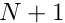
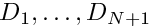
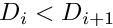
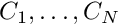
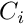
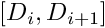
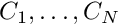
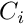
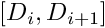

Input File Format: Size Distribution
Read a size distribution from a data file.
- Parameters
-
[in,out] file Spec file to read size distribution from. [in,out] sample_radius Sample radius values (m). [in,out] sample_num_conc Sample number concentrations (m^{-3}).
A size distribution file must consist of two lines:
- the first line must begin with
diamand be followed by  space-separated real scalars, giving the diameters  of bin edges (m) — these must be in increasing order, so  - the second line must begin with
num_concand be followed by space-separated real scalars, giving the number concenrations  in each bin (#/m^3) —  is the total number concentrations of particles with diameters in 
space-separated real scalars, giving the number concenrations  in each bin (#/m^3) —  is the total number concentrations of particles with diameters in 
The resulting size distribution is taken to be piecewise constant in log-diameter coordinates.
Example: a size distribution could be:
diam 1e-7 1e-6 1e-5 # bin edge diameters (m)
num_conc 1e9 1e8 # bin number concentrations (m^{-3})
This distribution has 1e9 particles per cubic meter with diameters between 0.1 micron and 1 micron, and 1e8 particles per cubic meter with diameters between 1 micron and 10 micron.
See also:
- Input File Format: Spec File Format — the input file text format
- Input File Format: Aerosol Distribution — the format for a complete aerosol distribution with several modes
- Input File Format: Aerosol Distribution Mode — the format for each mode of an aerosol distribution